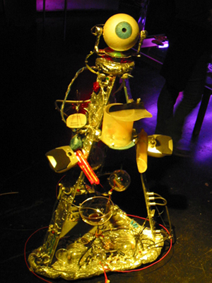

|  |
.......................... ALAN
ALAN, ein servierfreundlicher Cocktailroboter, konstruiert von Chris Veigl für die ROBÖXOTICA - einem Festival für Cocktail-mixende Roboter. Die aktuelle Version von ALAN kann noch mehr: Er unterzieht den Besucher dem bekannten "Turing-Test", er kann entweder autonom oder ferngesteuert (inter-)agieren, herumfahren, Snacks anbieten, sprechen und das Kameraauge bewegen. |